ภาพรวมบทนี้ CPU กับ memory อย่างเดียวยังไม่พอ คอมพิวเตอร์ต้องคุยกับอุปกรณ์ภายนอก เช่น คีย์บอร์ด disk และ network ด้วย บทนี้ดูว่า I/O module ทำหน้าที่อะไร และมี 3 เทคนิคหลัก ในการรับส่งข้อมูล คือ Programmed I/O, Interrupt-driven I/O และ DMA รวมถึงเรื่อง memory-mapped กับ isolated I/O, การหาว่าอุปกรณ์ตัวไหน interrupt, ชิปตัวอย่างของ Intel (82C59A, 8255A, 8237), Direct Cache Access (DCA/DDIO), วิวัฒนาการของ I/O, I/O channel และหัวข้อ interface (USB, FireWire, SCSI, Thunderbolt, InfiniBand, PCIe, SATA, Ethernet, Wi-Fi) ที่เป็นงานกลุ่ม
ต่อจาก Chapter 02 (bus, interrupt) และ Chapter 04 (cache, memory)
1. Course Outline
รายการหัวข้อของวิชา บทนี้คือ input and output systems (ตัวที่เน้นสีแดงในสไลด์)
- The structure and architecture of the computer systems
- basic components of computers
- data representations
- the Assembly Language
- memory system organization
- the memory hierarchy; the cache memory
- input and output systems ← บทนี้
- storage systems
- computing units
- the multiprocessor architecture
2. Generic Model of an I/O Module
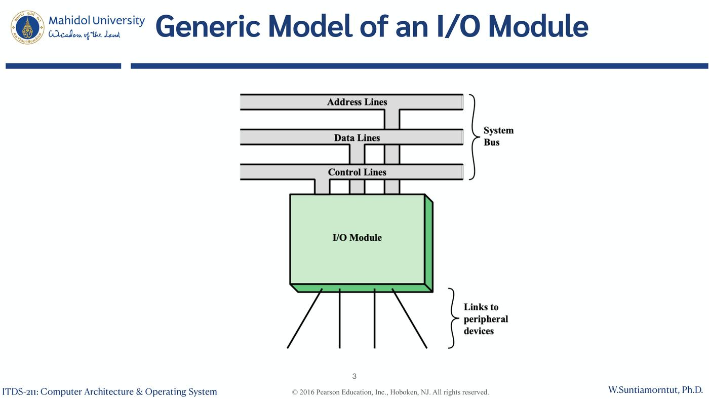
- ด้านบนต่อกับ System Bus ซึ่งมี 3 กลุ่มสาย:
- Address Lines
- Data Lines
- Control Lines
- ด้านล่างมี Links to peripheral devices (สายต่อไปยังอุปกรณ์ต่อพ่วง)
💡 I/O module เปรียบเหมือน ล่าม ระหว่าง CPU กับอุปกรณ์ ทั้งสองฝั่งพูดคนละภาษาและทำงานคนละความเร็ว
3. External Devices
- ทำหน้าที่แลกเปลี่ยนข้อมูล ระหว่างสภาพแวดล้อมภายนอกกับคอมพิวเตอร์
- ต่อกับคอมพิวเตอร์ผ่าน link ไปยัง I/O module
- อุปกรณ์ภายนอกแบ่งเป็น 3 ประเภท:
| ประเภท | ความหมาย | ตัวอย่าง (เสริม) |
|---|---|---|
| Human readable | สื่อสารกับคน | จอ, เครื่องพิมพ์, คีย์บอร์ด |
| Machine readable | สื่อสารกับอุปกรณ์ | disk, tape, sensor |
| Communication | เหมาะกับการสื่อสารกับอุปกรณ์ระยะไกล เช่น terminal หรือคอมพิวเตอร์อีกเครื่อง | modem, network card |
Block Diagram of an External Device
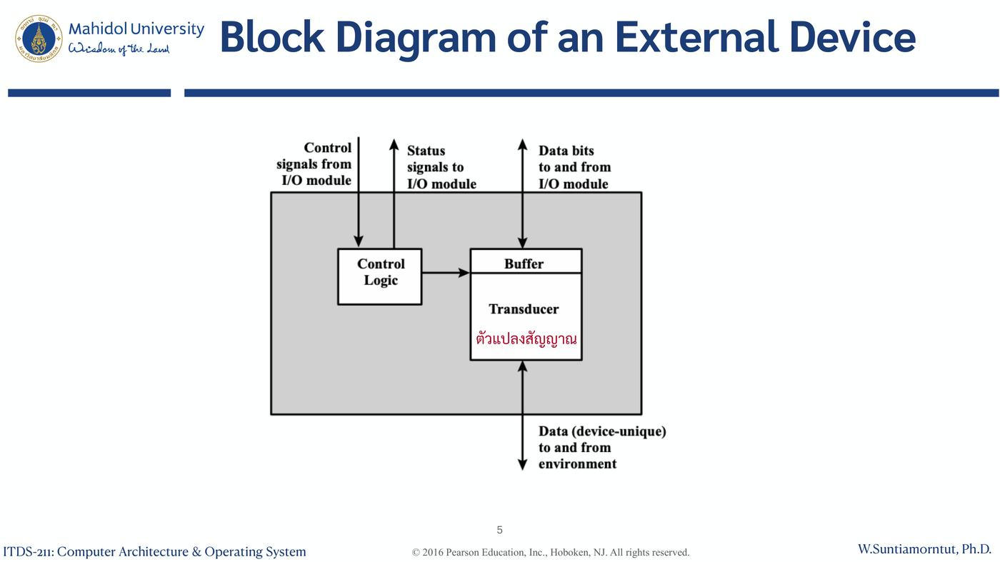
- Control signals from I/O module → Control Logic
- Status signals to I/O module ← จาก Control Logic
- Data bits to and from I/O module ⇄ Buffer
- Transducer (ตัวแปลงสัญญาณ) แปลงระหว่างข้อมูลดิจิทัลกับ Data (device-unique) to and from environment
- เช่น แปลงแรงกดปุ่มเป็นสัญญาณไฟฟ้า (เสริม)
4. Functions และ Block Diagram ของ I/O Module
4.1 หน้าที่หลักของ I/O Module ⭐
| หน้าที่ | ความหมาย |
|---|---|
| Control and timing | ประสานการไหลของข้อมูล ระหว่างทรัพยากรภายในกับอุปกรณ์ภายนอก |
| Processor communication | command decoding, data, status reporting, address recognition |
| Device communication | commands, status information และ data กับอุปกรณ์ |
| Data buffering | พักข้อมูลเพื่อชดเชยความเร็ว ที่ต่างกันของอุปกรณ์กับ memory |
| Error detection | ตรวจจับและรายงาน transmission errors |
💡 Data buffering สำคัญเพราะ memory เร็วมาก แต่อุปกรณ์อย่างเครื่องพิมพ์ช้ามาก ต้องมีที่พักข้อมูลไว้ตรงกลาง
4.2 Block Diagram of an I/O Module
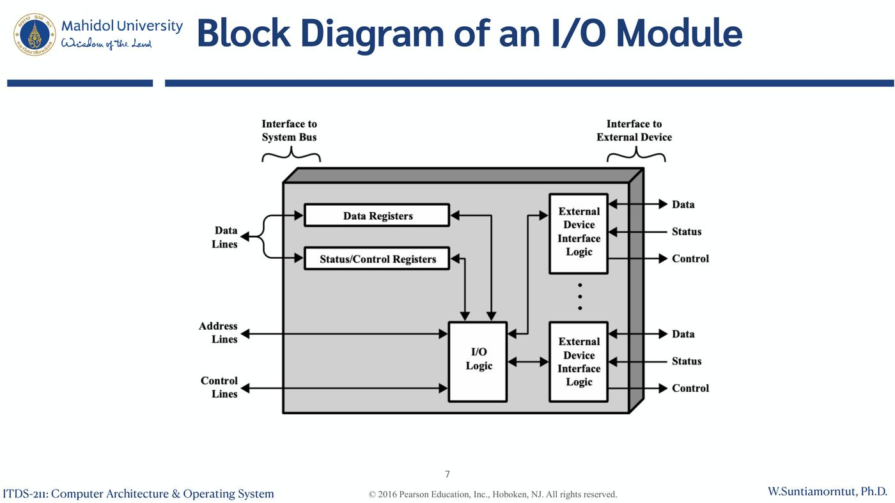
- ฝั่ง Interface to System Bus:
- Data Lines ⇄ Data Registers
- Data Lines ⇄ Status/Control Registers
- Address Lines และ Control Lines → I/O Logic
- ฝั่ง Interface to External Device:
- มี External Device Interface Logic หลายชุด (หนึ่งชุดต่ออุปกรณ์)
- แต่ละชุดมีสาย Data, Status, Control
5. สามเทคนิคของ I/O ⭐⭐
5.1 Programmed I/O
- Programmed I/O
- ข้อมูลแลกเปลี่ยนระหว่าง processor กับ I/O module
- processor รันโปรแกรมที่ควบคุม I/O โดยตรง
- เมื่อ processor สั่งงาน ต้องรอจน I/O ทำเสร็จ
- ถ้า processor เร็วกว่า I/O module มาก จะเสียเวลา processor เปล่า ๆ
- Interrupt-driven I/O
- processor สั่ง I/O command แล้วไปทำคำสั่งอื่นต่อ
- I/O module จะ interrupt processor เมื่อทำงานเสร็จ
- Direct memory access (DMA)
- I/O module กับ main memory แลกเปลี่ยนข้อมูลกันโดยตรง โดย processor ไม่ต้องเกี่ยว
💡 เปรียบกับการรอพัสดุ:
- Programmed I/O = ยืนเฝ้าหน้าบ้านจนกว่าพัสดุจะมา
- Interrupt-driven = ทำงานอื่นไปก่อน แล้วค่อยออกไปรับเมื่อกริ่งดัง
- DMA = จ้างคนรับพัสดุแล้วเอาไปเก็บในห้องให้เลย ตัวเราแค่ได้รับแจ้งตอนเสร็จ
5.2 Summary of I/O Techniques ⭐
| No Interrupts | Use of Interrupts | |
|---|---|---|
| I/O-to-memory transfer through processor | Programmed I/O | Interrupt-driven I/O |
| Direct I/O-to-memory transfer | – | Direct memory access (DMA) |
⚠️ DMA ก็ใช้ interrupt (แจ้งตอนโอนข้อมูลเสร็จ) แต่ข้อมูลไม่วิ่งผ่าน processor
6. I/O Commands
เมื่อ processor อ้างถึง I/O module จะส่งคำสั่งได้ 4 ประเภท:
| คำสั่ง | ใช้ทำอะไร |
|---|---|
| 1) Control | เปิดใช้อุปกรณ์ต่อพ่วงและบอกว่าให้ทำอะไร |
| 2) Test | ตรวจสถานะต่าง ๆ ของ I/O module และอุปกรณ์ (เช่น เปิดอยู่ไหม มี error ไหม) |
| 3) Read | ให้ I/O module ดึงข้อมูลจากอุปกรณ์มาเก็บใน internal buffer |
| 4) Write | ให้ I/O module รับข้อมูลจาก data bus แล้วส่งต่อให้อุปกรณ์ |
7. Three Techniques for Input of a Block of Data ⭐
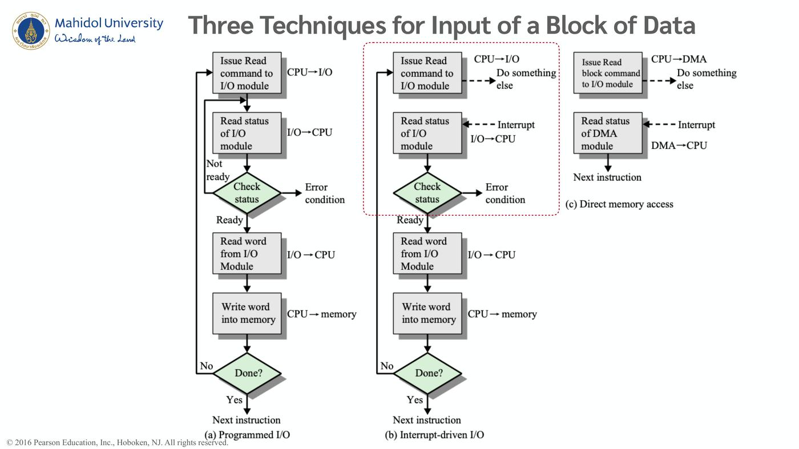
(a) Programmed I/O
- Issue Read command to I/O module (CPU → I/O)
- Read status of I/O module (I/O → CPU)
- Check status:
- Not ready → กลับไปอ่าน status ใหม่ (วนรอ)
- Error condition
- Ready → ไปต่อ
- Read word from I/O module (I/O → CPU)
- Write word into memory (CPU → memory)
- Done? No → กลับไปข้อ 1 / Yes → Next instruction
(b) Interrupt-driven I/O
- Issue Read command to I/O module (CPU → I/O) แล้ว Do something else
- Interrupt → Read status of I/O module (I/O → CPU)
- Check status (Error condition / Ready)
- Read word from I/O module (I/O → CPU)
- Write word into memory (CPU → memory)
- Done? No → กลับข้อ 1 / Yes → Next instruction
(c) Direct memory access
- Issue Read block command to I/O module (CPU → DMA) แล้ว Do something else
- Interrupt → Read status of DMA module (DMA → CPU)
- Next instruction
💡 ข้อต่างที่เห็นชัด:
- (a) CPU วนรอ สถานะอยู่ตลอด
- (b) CPU ไปทำงานอื่นได้ แต่ยัง ย้ายข้อมูลทีละ word เอง
- (c) CPU สั่ง ทั้ง block ครั้งเดียว แล้วรอรับ interrupt ตอนเสร็จ
8. I/O Instructions และ I/O Mapping
8.1 I/O Instructions
- ใน programmed I/O คำสั่งเกี่ยวกับ I/O ที่ processor fetch จาก memory ตรงกับ I/O command ที่ processor ส่งให้ I/O module เกือบหนึ่งต่อหนึ่ง
- รูปแบบคำสั่งขึ้นกับวิธีระบุ address ของอุปกรณ์ภายนอก
- อุปกรณ์ I/O แต่ละตัวที่ต่อผ่าน I/O module จะมี identifier หรือ address ไม่ซ้ำกัน
- เมื่อ processor ส่ง I/O command คำสั่งจะมี address ของอุปกรณ์ที่ต้องการ
- ดังนั้น I/O module ทุกตัวต้องแปล address lines เพื่อดูว่าคำสั่งนั้นส่งมาหาตัวเองไหม
- Memory-mapped I/O:
- ใช้ address space เดียวกัน ทั้ง memory locations และ I/O devices
- บน bus ต้องการแค่ read line 1 เส้นและ write line 1 เส้น
8.2 I/O Mapping Summary ⭐⭐
| Memory mapped I/O | Isolated I/O | |
|---|---|---|
| Address space | อุปกรณ์กับ memory ใช้ address space ร่วมกัน | แยก address space |
| การเข้าถึง | I/O ดูเหมือนการอ่าน/เขียน memory ธรรมดา | ต้องมี I/O or memory select lines |
| คำสั่งพิเศษ | ไม่มีคำสั่งพิเศษสำหรับ I/O | มีคำสั่งพิเศษสำหรับ I/O |
| ชุดคำสั่งที่ใช้ได้ | คำสั่งเข้าถึง memory มีให้เลือกมาก | มีจำนวนจำกัด (Limited set) |
8.3 Memory-Mapped and Isolated I/O (ตัวอย่างอ่านคีย์บอร์ด)
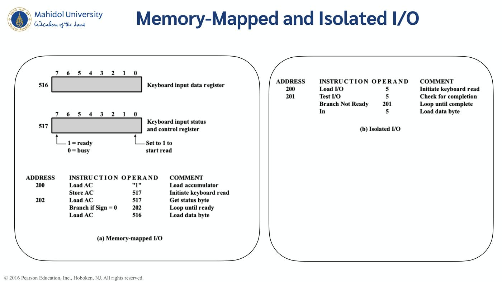
(a) Memory-mapped I/O
- address 516 = Keyboard input data register
- address 517 = Keyboard input status and control register
- บิต 7: 1 = ready, 0 = busy
- บิต 0: Set to 1 to start read
| ADDRESS | INSTRUCTION | OPERAND | COMMENT |
|---|---|---|---|
| 200 | Load AC | "1" | Load accumulator |
| Store AC | 517 | Initiate keyboard read | |
| 202 | Load AC | 517 | Get status byte |
| Branch if Sign = 0 | 202 | Loop until ready | |
| Load AC | 516 | Load data byte |
(b) Isolated I/O
| ADDRESS | INSTRUCTION | OPERAND | COMMENT |
|---|---|---|---|
| 200 | Load I/O | 5 | Initiate keyboard read |
| 201 | Test I/O | 5 | Check for completion |
| Branch Not Ready | 201 | Loop until complete | |
| In | 5 | Load data byte |
💡 แบบ memory-mapped ใช้คำสั่ง Load/Store ธรรมดา กับ address 516/517 ส่วนแบบ isolated ใช้คำสั่งเฉพาะ Load I/O, Test I/O, In กับเลขอุปกรณ์ 5
ทั้งสองตัวอย่างยังเป็น programmed I/O เพราะวนรอจนอุปกรณ์พร้อม
9. Interrupt-Driven I/O
9.1 แนวคิด
- ปัญหาของ programmed I/O: processor ต้อง รอนาน จนกว่า I/O module จะพร้อมรับหรือส่งข้อมูล
- ทางเลือก: processor สั่ง I/O command ให้ module แล้วไปทำงานอื่นที่มีประโยชน์
- I/O module จะ interrupt processor เพื่อขอรับบริการ เมื่อพร้อมแลกเปลี่ยนข้อมูล
- processor ทำการโอนข้อมูล แล้วกลับไปทำงานเดิมต่อ
9.2 Simple Interrupt Processing ⭐
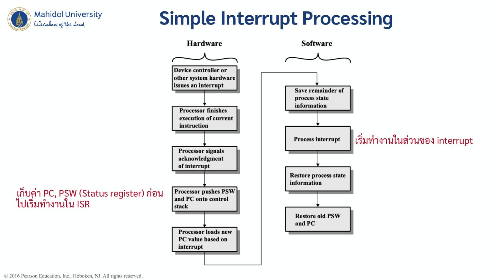
ฝั่ง Hardware
- Device controller หรือ hardware อื่น ส่ง interrupt
- Processor ทำคำสั่งปัจจุบันให้เสร็จก่อน
- Processor ส่งสัญญาณ acknowledgment ของ interrupt
- Processor push PSW และ PC ลง control stack — สไลด์เขียนไว้ว่า เก็บค่า PC, PSW (Status register) ก่อนไปเริ่มทำงานใน ISR
- Processor โหลดค่า PC ใหม่ตาม interrupt (กระโดดไป ISR)
ฝั่ง Software
- Save remainder of process state information (เช่น register อื่น ๆ)
- Process interrupt — สไลด์เขียนไว้ว่า เริ่มทำงานในส่วนของ interrupt
- Restore process state information
- Restore old PSW and PC → กลับไปทำโปรแกรมเดิม
⚠️ PC กับ PSW ถูกเก็บโดย hardware ส่วน register อื่นเก็บโดย software (ISR)
9.3 Changes in Memory and Registers for an Interrupt
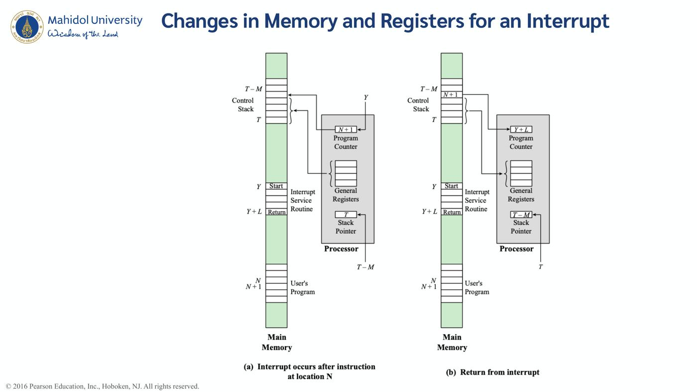
- (a) Interrupt occurs after instruction at location N
- ค่า N+1 (ที่อยู่ถัดไปของ user program) และ register ถูก push ลง control stack
- Stack pointer ลดจาก T เป็น T − M
- PC = Y (จุดเริ่มของ interrupt service routine)
- (b) Return from interrupt
- ISR จบที่ Y + L (คำสั่ง Return)
- pop ค่าคืนจาก stack: PC = N + 1, stack pointer กลับเป็น T
10. Design Issues และ Device Identification
10.1 Design Issues
การทำ interrupt I/O มี 2 ปัญหาการออกแบบ:
- เพราะมี I/O module หลายตัว processor จะ รู้ได้อย่างไรว่าอุปกรณ์ไหนเป็นตัวส่ง interrupt?
- ถ้า มีหลาย interrupt เกิดพร้อมกัน processor จะ เลือกทำตัวไหนก่อน?
10.2 Device Identification — 4 เทคนิค ⭐⭐
| # | เทคนิค | วิธีทำงาน | จุดเด่น/จุดด้อย |
|---|---|---|---|
| 1 | Multiple interrupt lines | มีสาย interrupt หลายเส้น ระหว่าง processor กับ I/O modules | ตรงไปตรงมาที่สุด แต่มีสายได้ไม่มาก แต่ละเส้นจึงยังมักมีหลาย module ต่อร่วมกัน |
| 2 | Software poll | เมื่อมี interrupt processor กระโดดไป ISR ที่ poll ถามทีละ module ว่าใครเป็นตัวส่ง | เสียเวลามาก (time consuming) |
| 3 | Daisy chain (hardware poll, vectored) | สาย interrupt acknowledge ต่อผ่านทุก module เป็นทอด ๆ module ที่ขอจะตอบด้วย vector | ใช้ vectored interrupt |
| 4 | Bus arbitration (vectored) | I/O module ต้อง ได้สิทธิ์ควบคุม bus ก่อน จึงยก interrupt request line → processor ตอบทาง interrupt acknowledge line → module ที่ขอ วาง vector ลงบน data lines | ใช้ vector เช่นกัน |
- Vector = address ของ I/O module หรือตัวระบุเฉพาะอื่น
- Vectored interrupt = processor ใช้ vector เป็น pointer ไปยัง device-service routine ที่ถูกต้องทันที ไม่ต้องรัน ISR กลางก่อน
โน้ตภาษาไทยในสไลด์ (Bus arbitration):
- I/O module ได้สิทธิ์ควบคุม BUS แล้วจึงขอ interrupt
- Processor detects interrupt
- Module ที่ร้องขอส่ง address of I/O ลงใน data line
💡 Daisy chain เหมือนส่งกระดาษเช็กชื่อไปตามแถว คนแรกที่ยกมือจะเก็บกระดาษไว้แล้วตอบชื่อตัวเอง ทำให้ module ที่อยู่ใกล้ processor มี priority สูงกว่า (เสริม)
11. Intel 82C59A และ 8255A
11.1 Use of the 82C59A Interrupt Controller
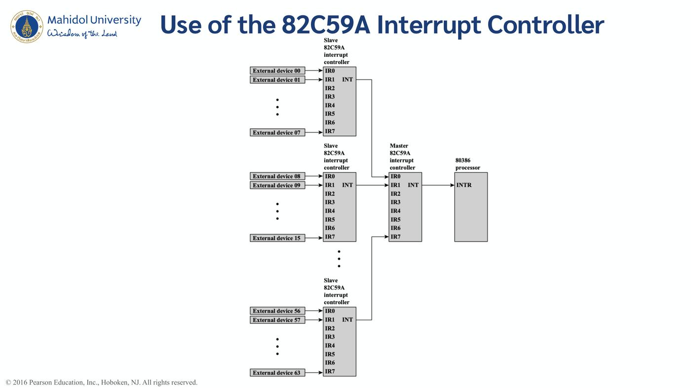
- ชิป 82C59A คือ interrupt controller รับ interrupt ได้ 8 เส้น (IR0–IR7)
- ต่อแบบ cascade:
- Slave 82C59A หลายตัว แต่ละตัวรับ External device 8 ตัว (00–07, 08–15, …, 56–63)
- ขา INT ของ slave ต่อเข้า IR0–IR7 ของ Master 82C59A
- Master INT → INTR ของ 80386 processor
- รวมรองรับอุปกรณ์ได้สูงสุด 64 ตัว (8 × 8)
11.2 Intel 8255A Programmable Peripheral Interface
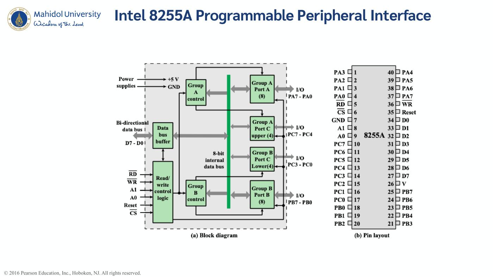
- (a) Block diagram
- Bi-directional data bus D7–D0 ⇄ Data bus buffer ⇄ 8-bit internal data bus
- Read/write control logic (RD, WR, A1, A0, Reset, CS)
- Group A control: Port A (8 บิต) → I/O PA7–PA0, Port C upper (4) → PC7–PC4
- Group B control: Port C lower (4) → PC3–PC0, Port B (8) → PB7–PB0
- Power supplies +5V, GND
- (b) Pin layout: ชิป 40 ขา
11.3 Intel 8255A Control Word
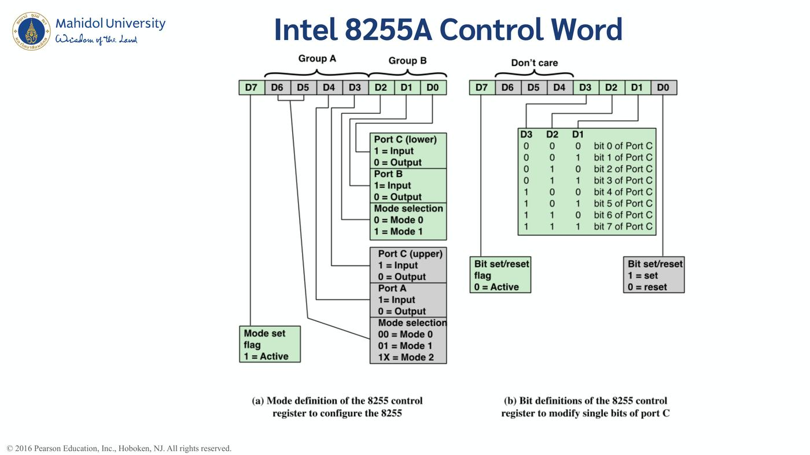
(a) Mode definition of the 8255 control register (ใช้ตั้งค่า 8255)
| บิต | ความหมาย |
|---|---|
| D7 | Mode set flag: 1 = Active |
| D6, D5 | Group A mode selection: 00 = Mode 0, 01 = Mode 1, 1X = Mode 2 |
| D4 | Port A: 1 = Input, 0 = Output |
| D3 | Port C (upper): 1 = Input, 0 = Output |
| D2 | Group B mode selection: 0 = Mode 0, 1 = Mode 1 |
| D1 | Port B: 1 = Input, 0 = Output |
| D0 | Port C (lower): 1 = Input, 0 = Output |
(b) Bit definitions of the 8255 control register to modify single bits of port C
| บิต | ความหมาย |
|---|---|
| D7 | Bit set/reset flag: 0 = Active |
| D6–D4 | Don't care |
| D3–D1 | เลือกบิตของ Port C (000 = bit 0 … 111 = bit 7) |
| D0 | Bit set/reset: 1 = set, 0 = reset |
💡 D7 เป็นตัวแยกสองแบบ: 1 = ตั้งค่า mode ของ port, 0 = set/reset ทีละบิตของ port C
11.4 Keyboard / Display Interface to 82C55A
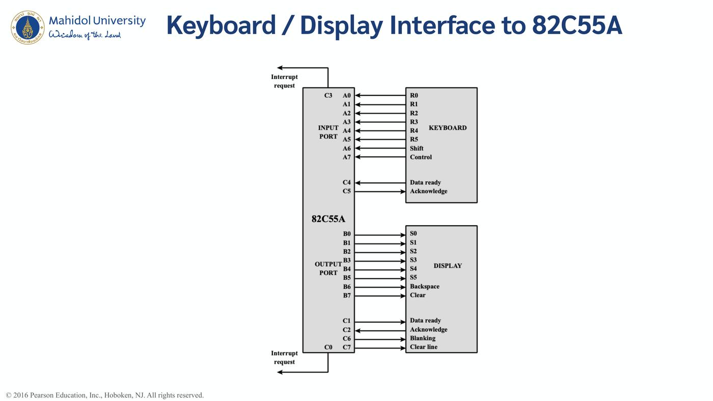
- INPUT PORT (A0–A7) ← KEYBOARD: R0–R5 (ข้อมูลปุ่ม), Shift, Control
- C4, C5: Data ready, Acknowledge ของคีย์บอร์ด; C3 = Interrupt request
- OUTPUT PORT (B0–B7) → DISPLAY: S0–S5, Backspace, Clear
- C1, C2, C6, C7: Data ready, Acknowledge, Blanking, Clear line ของจอ; C0 = Interrupt request
12. Direct Memory Access (DMA) ⭐⭐
12.1 Drawbacks of Programmed and Interrupt-Driven I/O
ทั้งสองแบบมี ข้อเสียในตัว 2 ข้อ:
- อัตราการโอนข้อมูล I/O ถูกจำกัดด้วยความเร็วที่ processor ตรวจและให้บริการอุปกรณ์
- processor ต้องผูกติดกับการจัดการ I/O transfer เพราะ ต้องรันหลายคำสั่งต่อการโอนแต่ละครั้ง
→ เมื่อต้องย้ายข้อมูลจำนวนมาก เทคนิคที่มีประสิทธิภาพกว่าคือ direct memory access (DMA)
12.2 Typical DMA Block Diagram
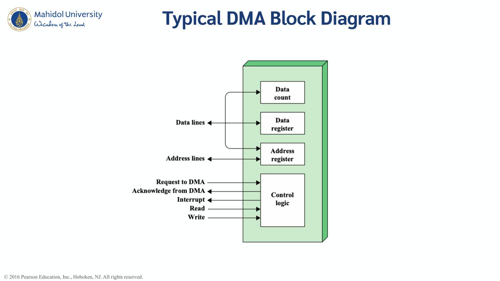
| ส่วนประกอบ | หน้าที่ (อธิบายเสริม) |
|---|---|
| Data count | จำนวน word ที่ยังต้องโอน |
| Data register | พักข้อมูล ต่อกับ Data lines |
| Address register | ตำแหน่ง memory ที่จะอ่าน/เขียน ต่อกับ Address lines |
| Control logic | สัญญาณ Request to DMA, Acknowledge from DMA, Interrupt, Read, Write |
12.3 DMA and Interrupt Breakpoints During an Instruction Cycle ⭐
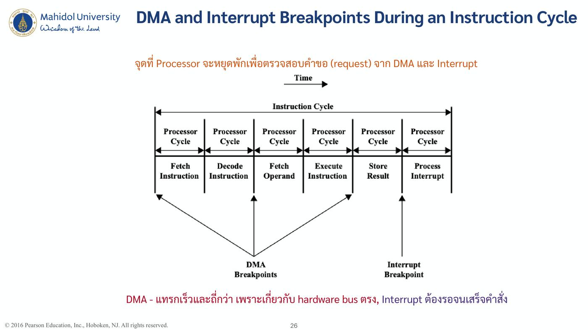
- สไลด์อธิบายว่าเป็น จุดที่ Processor จะหยุดพักเพื่อตรวจสอบคำขอ (request) จาก DMA และ Interrupt
- Instruction Cycle แบ่งเป็น processor cycles: Fetch Instruction → Decode Instruction → Fetch Operand → Execute Instruction → Store Result → Process Interrupt
- DMA Breakpoints: แทรกได้ ระหว่าง processor cycle หลายจุด (หลัง fetch, decode, fetch operand, execute, store)
- Interrupt Breakpoint: มี จุดเดียว ตอนท้าย cycle (หลัง Store Result)
- สไลด์สรุปว่า DMA แทรกเร็วและถี่กว่า เพราะเกี่ยวกับ hardware bus ตรง ส่วน Interrupt ต้องรอจนเสร็จคำสั่ง
⚠️ DMA ไม่ใช่ interrupt processor แค่ หยุดใช้ bus ชั่วคราว (ไม่ต้องเก็บ context) จึงหยุดกลางคำสั่งได้
12.4 Alternative DMA Configurations
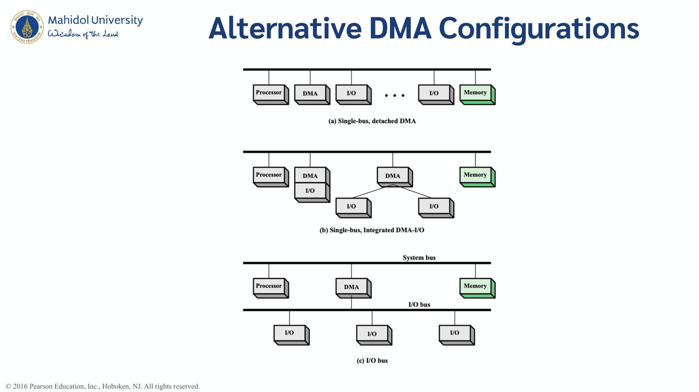
| แบบ | ลักษณะ | ข้อสังเกต (เสริม) |
|---|---|---|
| (a) Single-bus, detached DMA | Processor, DMA, I/O, Memory ต่อ bus เดียวกันหมด | ถูกแต่ช้า ข้อมูลข้าม bus 2 ครั้ง (I/O → DMA → memory) |
| (b) Single-bus, Integrated DMA-I/O | DMA ติดกับ I/O (หรือ DMA หนึ่งตัวคุม I/O หลายตัว) นอก bus | ลดการใช้ system bus |
| (c) I/O bus | DMA ต่อ system bus และมี I/O bus แยก สำหรับ I/O หลายตัว | ขยายเพิ่มอุปกรณ์ได้ง่าย |
13. Intel 8237 DMA Controller
13.1 8237 DMA Usage of System Bus
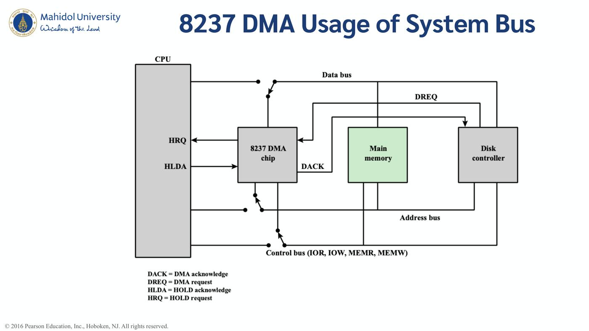
- สัญญาณ:
- DACK = DMA acknowledge
- DREQ = DMA request
- HLDA = HOLD acknowledge
- HRQ = HOLD request
- ลำดับการทำงาน (อธิบายตามภาพ แบบเสริม):
- Disk controller ส่ง DREQ ให้ 8237
- 8237 ส่ง HRQ ให้ CPU เพื่อขอยึด bus
- CPU ตอบ HLDA และปล่อย bus
- 8237 ส่ง DACK ให้ disk controller แล้วโอนข้อมูลกับ main memory ผ่าน data bus/address bus/control bus (IOR, IOW, MEMR, MEMW)
- เสร็จแล้ว 8237 ยกเลิก HRQ คืน bus ให้ CPU
13.2 Fly-By DMA Controller
- ข้อมูลไม่วิ่งผ่านและไม่ถูกเก็บในชิป DMA
- DMA ใช้ได้เฉพาะระหว่าง I/O port กับ memory
- ใช้ระหว่าง I/O port สองตัว หรือ memory สองตำแหน่งไม่ได้
- ทำ memory-to-memory ได้ผ่าน register
- 8237 มี DMA 4 channels
- โปรแกรมแยกกันได้
- ใช้งานได้ทีละ channel
- หมายเลข 0, 1, 2 และ 3
13.3 Intel 8237A Registers (Table 7.2)
E/D = enable/disable, TC = terminal count
| Bit | Command | Status | Mode | Single Mask | All Mask |
|---|---|---|---|---|---|
| D0 | Memory-to-memory E/D | Channel 0 has reached TC | Channel select | Select channel mask bit | Clear/set channel 0 mask bit |
| D1 | Channel 0 address hold E/D | Channel 1 has reached TC | (Channel select) | (Select channel mask bit) | Clear/set channel 1 mask bit |
| D2 | Controller E/D | Channel 2 has reached TC | Verify/write/read transfer | Clear/set mask bit | Clear/set channel 2 mask bit |
| D3 | Normal/compressed timing | Channel 3 has reached TC | (Verify/write/read transfer) | Not used | Clear/set channel 3 mask bit |
| D4 | Fixed/rotating priority | Channel 0 request | Auto-initialization E/D | Not used | Not used |
| D5 | Late/extended write selection | Channel 0 request | Address increment/decrement select | Not used | Not used |
| D6 | DREQ sense active high/low | Channel 0 request | Demand/single/block/cascade mode select | Not used | Not used |
| D7 | DACK sense active high/low | Channel 0 request | (Demand/single/block/cascade mode select) | Not used | Not used |
⚠️ ในตาราง Status D4–D7 เขียนว่า "Channel 0 request" ทุกบิต ตามต้นฉบับ แต่จริง ๆ น่าจะเป็น request ของ channel 0, 1, 2, 3 ตามลำดับ (ข้อสังเกตเสริม)
14. Direct Cache Access (DCA)
14.1 ทำไมต้องมี DCA
- DMA ไม่สามารถ scale รองรับความต้องการ ที่เพิ่มขึ้นมากของอัตราข้อมูลบน network I/O
- สไลด์เขียนไว้ว่า DMA ไม่ได้รองรับการ scale ในกรณีที่ต้องการ data rate มาก
- ความต้องการส่วนใหญ่มาจาก Ethernet switch 10-Gbps และ 100-Gbps ที่ใช้โอนข้อมูลปริมาณมหาศาลกับ database server และระบบสมรรถนะสูง
- อีกแหล่งคือ Wi-Fi ระดับ gigabit
- อุปกรณ์ Wi-Fi 3.2 Gbps และ 6.76 Gbps เริ่มแพร่หลาย และสร้างภาระให้ระบบองค์กร
14.2 Xeon E5-2600/4600 Chip Architecture
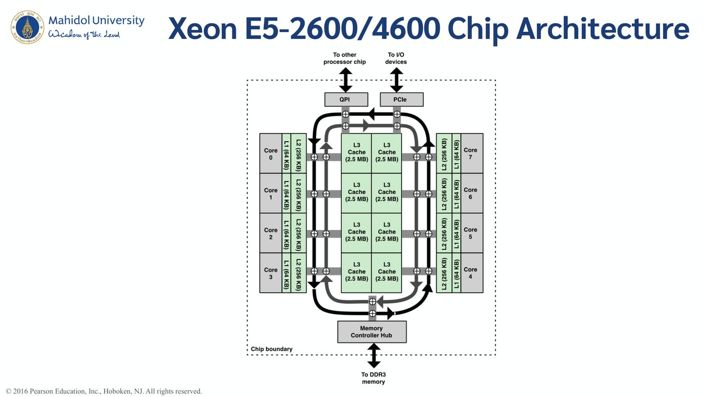
- 8 cores (Core 0–7)
- แต่ละ core มี L1 cache 64 KB (32 KB instruction + 32 KB data ตามภาพ) และ L2 cache 256 KB
- L3 Cache ร่วม (บล็อกละ 2.5 MB ตรงกลาง)
- เชื่อมออกนอกชิปด้วย:
- QPI → To other processor chip
- PCIe → To I/O devices
- Memory Controller Hub → To DDR3 memory
14.3 Cache-Related Performance Issues (1)
- network traffic ส่งเป็นลำดับของ protocol blocks เรียกว่า packets หรือ protocol data units
- protocol ระดับล่างสุด (link) มักเป็น Ethernet แต่ละ block ข้อมูลคือ Ethernet packet ที่มี packet ของ protocol ระดับสูงกว่าเป็น payload
- protocol ระดับสูงกว่า มักเป็น IP (บน Ethernet) และ TCP (บน IP)
- payload ของ Ethernet = block ข้อมูลที่มี TCP header และ IP header
- ข้อมูลขาออก: Ethernet packet ถูกสร้างใน I/O controller หรือ NIC (network interface controller)
- ข้อมูลขาเข้า: I/O controller ตัดข้อมูล Ethernet ออก แล้วส่ง TCP/IP packet ให้ host CPU
14.4 Cache-Related Performance Issues (2)
- ทั้งขาออกและขาเข้า core, main memory และ cache ต่างเกี่ยวข้องทั้งหมด
- ในแบบ DMA เมื่อแอปจะส่งข้อมูล:
- แอป วางข้อมูลใน application buffer ใน main memory
- core คัดลอกไปยัง system buffer ใน main memory และ สร้าง TCP/IP headers ซึ่งถูกพักไว้ใน system memory ด้วย
- packet ถูกหยิบไปด้วย DMA เพื่อส่งผ่าน NIC
- กิจกรรมนี้ ใช้ทั้ง main memory และ cache
- ขาเข้าก็ต้องคัดลอกระหว่าง system buffer กับ application buffer ในทำนองเดียวกัน
14.5 Packet Traffic Steps ⭐
| Incoming | Outgoing |
|---|---|
| 1. Packet arrives | 1. Packet transfer requested |
| 2. DMA | 2. Packet created |
| 3. NIC interrupts host | 3. Output operation invoked |
| 4. Retrieve descriptors and headers | 4. DMA transfer |
| 5. Cache miss occurs | 5. NIC signals completion |
| 6. Header is processed | 6. Driver frees buffer |
| 7. Payload transferred |
💡 ปัญหาอยู่ที่ขั้น "Cache miss occurs" เพราะข้อมูลเพิ่งถูก DMA ลง main memory แต่ยังไม่อยู่ใน cache ของ core พอ core จะใช้จึงต้องไปดึงจาก memory ที่ช้า
14.6 Direct Cache Access Strategies ⭐
กลยุทธ์ที่ 1: แบบง่ายที่สุด (ทำเป็น prototype บน Intel Xeon หลายรุ่นระหว่างปี 2006–2010)
- ใช้ได้กับ incoming network traffic เท่านั้น
- DCA function ใน memory controller ส่ง prefetch hint ให้ core ทันทีที่ข้อมูลพร้อมใน system memory
- core จึง prefetch data packet จาก system buffer ได้ล่วงหน้า
- สไลด์สรุปไว้ว่า:
- DCA เกี่ยวเฉพาะ "incoming network traffic"
- DCA function อยู่ใน mem. Controller
- Core จะ prefetch "data packet จาก system buffer"
กลยุทธ์ที่ 2: ได้ผลดีกว่ามาก = เลี่ยง system buffer ใน main memory ไปเลย
- packet และ packet descriptor ถูก core เข้าถึงใน system buffer แค่ครั้งเดียว
- ขาเข้า core อ่านข้อมูลจาก buffer แล้วโอน payload ไป application buffer
- ไม่ต้องเข้าถึงข้อมูลนั้นใน system buffer อีก
- Cache injection — ใส่ข้อมูลลง cache โดยตรง
- ทำจริงใน Intel Xeon เรียกว่า Direct Data I/O (DDIO)
14.7 Comparison of DMA and DDIO
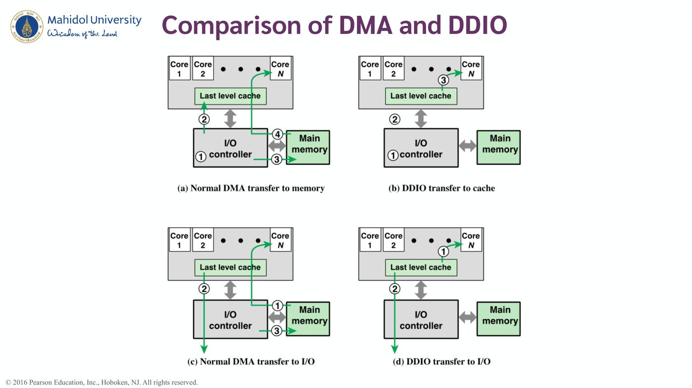
| กรณี | Normal DMA | DDIO |
|---|---|---|
| ขาเข้า (to memory / to cache) | (a) I/O controller → main memory → แล้ว core ค่อยดึงขึ้น last level cache (หลายขั้น) | (b) I/O controller → last level cache โดยตรง |
| ขาออก (to I/O) | (c) ข้อมูลจาก cache → main memory → I/O controller | (d) I/O controller ดึงจาก last level cache โดยตรง |
💡 DDIO ตัดทางอ้อมผ่าน main memory จึง ลด cache miss และจำนวนการคัดลอก
15. Evolution of the I/O Function และ I/O Channel Architecture
15.1 Evolution of the I/O Function ⭐
- CPU ควบคุมอุปกรณ์ต่อพ่วงโดยตรง
- เพิ่ม controller หรือ I/O module CPU ใช้ programmed I/O แบบไม่มี interrupt
- โครงสร้างเหมือนข้อ 2 แต่ใช้ interrupt CPU ไม่ต้องเสียเวลารอ I/O จึงมีประสิทธิภาพมากขึ้น
- I/O module เข้าถึง memory ได้โดยตรงด้วย DMA ย้ายข้อมูลเป็น block โดย ไม่ต้องใช้ CPU ยกเว้นตอนเริ่มและตอนจบ
- I/O module ถูกพัฒนาเป็น processor ของตัวเอง มี instruction set เฉพาะสำหรับ I/O
- I/O module มี local memory ของตัวเอง เท่ากับเป็น คอมพิวเตอร์อีกเครื่องหนึ่ง ควบคุมอุปกรณ์ I/O จำนวนมากได้โดย CPU แทบไม่ต้องยุ่ง
💡 แนวโน้มคือ ย้ายงาน I/O ออกจาก CPU ไปเรื่อย ๆ (ขั้น 5–6 คือ I/O channel)
15.2 I/O Channel Architecture
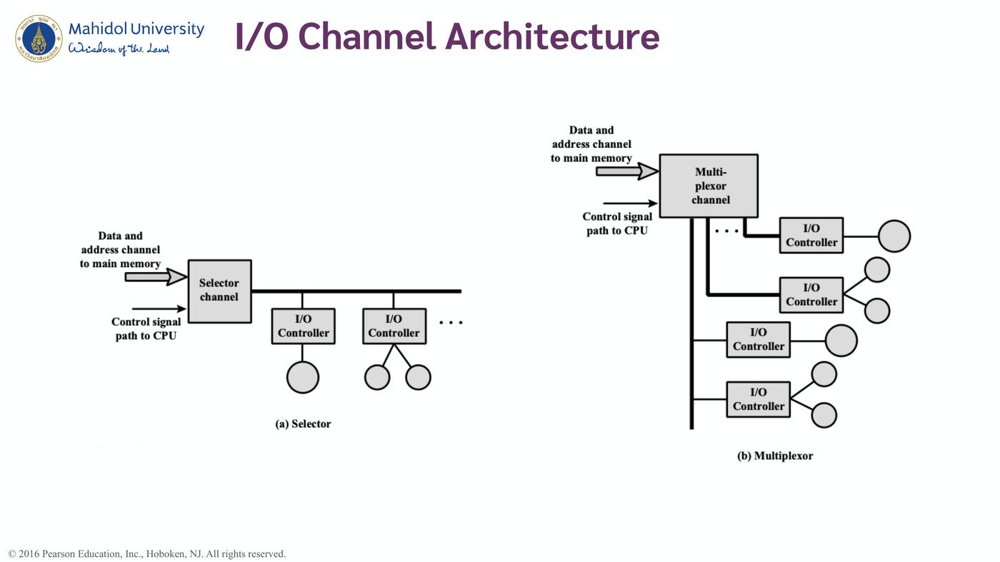
| แบบ | ลักษณะ |
|---|---|
| (a) Selector channel | รับ Data and address channel to main memory และ Control signal path to CPU ต่อ I/O Controller หลายตัว แต่ ให้บริการทีละตัว (เหมาะกับอุปกรณ์เร็ว) (คำอธิบายเสริม) |
| (b) Multiplexor channel | ต่อ I/O Controller หลายตัว และ สลับให้บริการหลายตัวพร้อมกัน (เหมาะกับอุปกรณ์ช้า) (คำอธิบายเสริม) |
16. Assignment และหัวข้อ Interface 9 เรื่อง
16.1 Assignment
- กลุ่มละ 6–7 คน แบ่งให้ได้ 9 กลุ่ม 9 เรื่อง
- จับฉลากเรื่อง ที่จะไปทำรายงานกลุ่ม
- สิ่งที่ต้องส่ง:
- เอกสารรายงานสรุป ใส่ชื่อสมาชิกและรหัส น.ศ. ให้ครบถ้วน
- นำเสนอกลุ่มละ 10–15 นาที ในชั้นเรียนของคาบสัปดาห์ถัดไป (8, 10 กันยายน 2569)
16.2 (1) Universal Serial Bus (USB)
- ใช้ต่ออุปกรณ์ต่อพ่วงแพร่หลาย
- เป็น interface มาตรฐานของอุปกรณ์ความเร็วต่ำ
- ใช้กับ I/O ความเร็วสูงทั่วไปด้วย
- ผ่านมาหลายรุ่น:
| รุ่น | ความเร็ว |
|---|---|
| USB 1.0 | Low Speed 1.5 Mbps, Full Speed 12 Mbps |
| USB 2.0 | 480 Mbps |
| USB 3.0 = USB 3.1 (Gen1) = USB 3.2 (Gen1) | bus ความเร็วสูง SuperSpeed ทำงานขนานกับ bus ของ USB 2.0; signaling 5 Gbps แต่ใช้งานจริงได้ สูงสุด 4 Gbps (เพราะ signaling overhead) |
| USB 3.1 (Gen2) = USB 3.2 (Gen2) | โหมด SuperSpeed+ signaling 10 Gbps, ใช้งานได้ตามทฤษฎี 9.7 Gbps |
| USB 3.2 (Gen2x2) | 20 Gbps |
- ควบคุมโดย root host controller ต่ออุปกรณ์เป็นเครือข่ายเฉพาะที่แบบ hierarchical tree topology
16.3 (2) FireWire Serial Bus (1999–2000)
- พัฒนาเป็น ทางเลือกแทน SCSI สำหรับระบบขนาดเล็ก เช่น PC, workstation, server
- เป้าหมาย: รองรับ I/O rate สูงขึ้น โดย ไม่ต้องใช้ I/O channel ที่ใหญ่และแพง แบบ mainframe/supercomputer
- IEEE standard 1394 (High Performance Serial Bus)
- ใช้ daisy chain ต่ออุปกรณ์ได้ สูงสุด 63 ตัวจาก port เดียว
- ต่อ FireWire bus ได้ 1022 bus ผ่าน bridge
- รองรับ hot plugging (เสียบ/ถอดได้โดยไม่ต้องปิดเครื่องหรือตั้งค่าใหม่)
- ตั้งค่าอัตโนมัติ (automatic configuration)
- ไม่ต้องมี terminator ระบบกำหนด address ให้เอง
16.4 (3) SCSI
- Small Computer System Interface
- เคยเป็นมาตรฐานยอดนิยม สำหรับต่ออุปกรณ์กับคอมพิวเตอร์ขนาดเล็กและกลาง
- เสียความนิยมให้ USB และ FireWire ในระบบเล็ก
- รุ่นความเร็วสูงยังนิยม ใช้กับ mass memory ในระบบองค์กร
- โครงสร้างเป็น shared bus รองรับ 16 หรือ 32 อุปกรณ์ (ตามรุ่น)
- ส่งข้อมูลแบบ ขนาน (parallel) ไม่ใช่ serial; bus กว้าง 16 บิต (รุ่นแรก) และ 32 บิต (รุ่นหลัง)
- ความเร็ว 5 Mbps (SCSI-1) ถึง 160 Mbps (SCSI-3 U3)
16.5 (4) Thunderbolt
- เทคโนโลยีต่อพ่วงใหม่และเร็วที่สุด สำหรับงานทั่วไป (ณ ตอนที่ตำราเขียน)
- Intel พัฒนาร่วมกับ Apple
- รวม data, video, audio และ power ในสายเดียว สำหรับอุปกรณ์อย่าง hard drive, RAID arrays, video-capture box, network interface
- throughput สูงสุด 10 Gbps ต่อทิศทาง และจ่ายไฟได้ สูงสุด 10 Watts
16.6 (5) InfiniBand
- I/O specification สำหรับตลาด server ระดับสูง
- รุ่นแรกออกต้นปี 2001
- IBM zEnterprise mainframe ใช้มาก
- กำหนดสถาปัตยกรรมการไหลของข้อมูลระหว่าง processor กับ intelligent I/O devices
- นิยมใช้กับ storage area networking และ storage ขนาดใหญ่
- ต่อ server, remote storage และอุปกรณ์เครือข่ายเข้ากับ central fabric ของ switch และ link
- สถาปัตยกรรมแบบ switch ต่อได้ถึง 64,000 server, storage และอุปกรณ์เครือข่าย
16.7 (6) PCI Express และ (7) SATA
| PCI Express | SATA | |
|---|---|---|
| คืออะไร | bus ความเร็วสูง ต่ออุปกรณ์ต่อพ่วงได้หลายชนิดหลายความเร็ว | Serial Advanced Technology Attachment — interface สำหรับ disk storage |
| ความเร็ว | – | สูงสุด 6 Gbps, สูงสุดต่ออุปกรณ์ 300 Mbps |
| การใช้งาน | – | คอมพิวเตอร์ตั้งโต๊ะ, งานอุตสาหกรรม และ embedded |
16.8 (8) Ethernet
- เทคโนโลยีเครือข่ายแบบมีสายที่ใช้มากที่สุด
- รองรับ สูงสุด 100 Gbps และระยะ ไม่กี่เมตรถึงหลายสิบกิโลเมตร
- จำเป็นกับ PC, workstation, server และ storage ขนาดใหญ่ในองค์กรทุกขนาด
- เริ่มจากระบบทดลองแบบ bus 3 Mbps
- เปลี่ยนจาก bus-based เป็น switch-based
- มี central switch ที่ทุกอุปกรณ์ต่อตรง
- ความเร็วเพิ่มขึ้นทีละ 10 เท่าเป็นระยะ
- ปัจจุบันมีถึง 100 Gbps
16.9 (9) Wi-Fi
- เทคโนโลยีเข้าอินเทอร์เน็ตไร้สายที่ใช้มากที่สุด
- ต่อคอมพิวเตอร์, แท็บเล็ต, สมาร์ทโฟน และอุปกรณ์อื่น เช่น กล้อง, ทีวี, thermostat
- ในองค์กร ช่วยเพิ่ม productivity และประสิทธิภาพเครือข่าย
- Public hotspot ขยายตัวมาก ให้เน็ตฟรีในที่สาธารณะส่วนใหญ่
- เมื่อเทคโนโลยีเสาอากาศ การส่งสัญญาณ และ protocol พัฒนาขึ้น คณะกรรมการ IEEE 802.11 จึงออกมาตรฐานความเร็วสูงขึ้นเรื่อย ๆ
- รุ่นปัจจุบัน (ตามสไลด์): 802.11ac (2014) สูงสุด 3.2 Gbps
17. IBM zEC12 I/O Structure
17.1 IBM EC12 I/O Channel Subsystem Structure
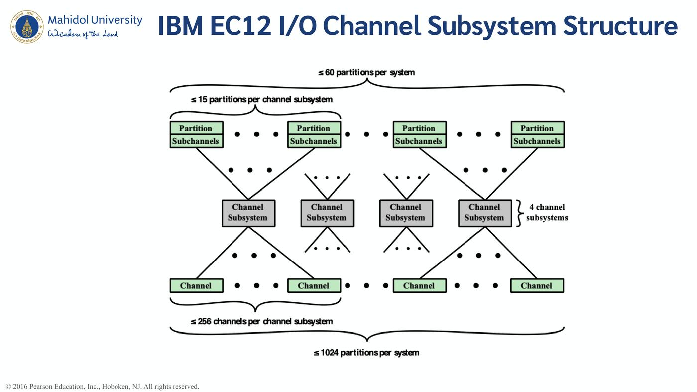
- ≤ 60 partitions per system
- ≤ 15 partitions per channel subsystem (แต่ละ partition มี subchannels)
- 4 channel subsystems
- ≤ 256 channels per channel subsystem
- ≤ 1024 partitions per system (ตัวเลขตามภาพในสไลด์)
17.2 Figure 7.20 — IBM zEC12 I/O Frames, Front View
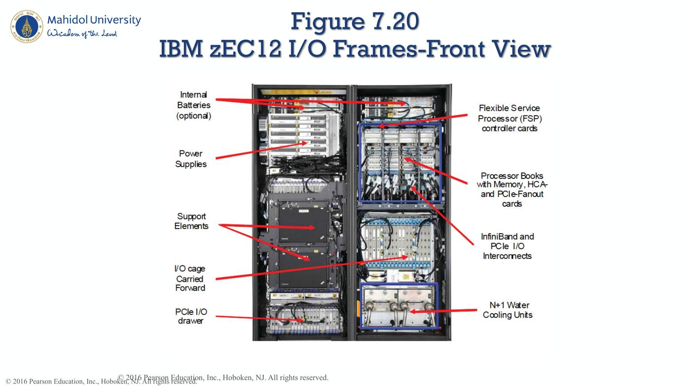
ส่วนประกอบที่ชี้ในภาพ:
- Internal Batteries (optional)
- Power Supplies
- Support Elements
- I/O cage Carried Forward
- PCIe I/O drawer
- Flexible Service Processor (FSP) controller cards
- Processor Books with Memory, HCA- and PCIe-Fanout cards
- InfiniBand and PCIe I/O Interconnects
- N+1 Water Cooling Units
17.3 IBM EC12 I/O System Structure
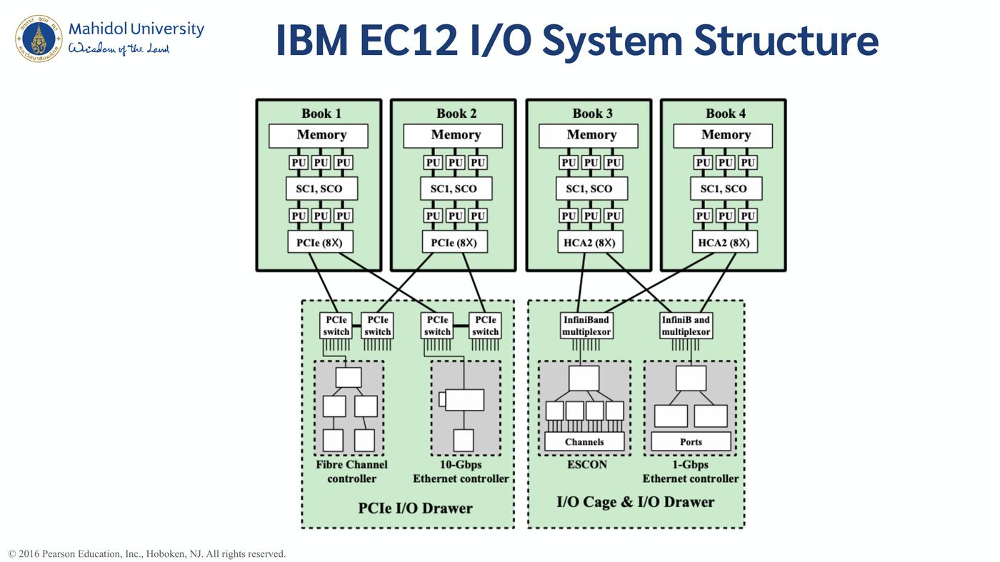
- Book 1–4 แต่ละ book มี Memory, PU (processor units), SC1/SC0 และ PCIe (8x) หรือ HCA2 (8x)
- PCIe I/O Drawer: PCIe switch → Fibre Channel controller, 10-Gbps Ethernet controller
- I/O Cage & I/O Drawer: InfiniBand multiplexor → ESCON (Channels), 1-Gbps Ethernet controller (Ports)
Q & A (สไลด์สุดท้าย)
18. คำศัพท์สำคัญ
| คำศัพท์ | ความหมาย | จำง่าย ๆ ว่า |
|---|---|---|
| I/O module | ตัวกลางระหว่าง system bus กับอุปกรณ์ | ล่าม |
| Human readable / Machine readable / Communication | 3 ประเภทของ external device | คน / เครื่อง / ระยะไกล |
| Transducer | ตัวแปลงสัญญาณในอุปกรณ์ | |
| Data buffering | พักข้อมูลชดเชยความเร็ว | |
| Programmed I/O | CPU สั่งแล้ววนรอ | ยืนเฝ้า |
| Interrupt-driven I/O | CPU ทำงานอื่น แล้ว I/O interrupt ตอนพร้อม | รอกริ่ง |
| DMA | I/O module กับ memory โอนข้อมูลตรง | จ้างคนรับของ |
| Control / Test / Read / Write | 4 ประเภทของ I/O command | |
| Memory-mapped I/O | ใช้ address space ร่วม ไม่มีคำสั่งพิเศษ | |
| Isolated I/O | แยก address space มีคำสั่ง I/O เฉพาะ | |
| PSW | Program Status Word (status register) | ถูก push พร้อม PC |
| ISR | Interrupt Service Routine | |
| Multiple interrupt lines | หลายสาย interrupt | ง่ายสุด |
| Software poll | ISR ถามทีละ module | ช้า |
| Daisy chain | สาย acknowledge ต่อผ่านทุก module (hardware poll, vectored) | ส่งกระดาษตามแถว |
| Bus arbitration | ได้ bus ก่อนแล้วจึง interrupt (vectored) | |
| Vector / Vectored interrupt | address ของ module ใช้ชี้ไป device-service routine | |
| 82C59A | Interrupt controller (IR0–IR7, cascade) | |
| 8255A | Programmable Peripheral Interface (Port A, B, C) | |
| 8237 | DMA controller 4 channels | |
| DREQ / DACK / HRQ / HLDA | DMA request / DMA ack / HOLD request / HOLD ack | |
| Fly-by DMA | ข้อมูลไม่ผ่านชิป DMA | |
| TC | Terminal count | |
| DCA | Direct Cache Access | ขาเข้า network |
| NIC | Network Interface Controller | |
| Cache injection / DDIO | ใส่ข้อมูลลง cache ตรง (Intel Direct Data I/O) | |
| Selector / Multiplexor channel | I/O channel บริการทีละตัว / สลับหลายตัว | |
| USB, FireWire (IEEE 1394), SCSI, Thunderbolt, InfiniBand, PCIe, SATA, Ethernet, Wi-Fi (802.11) | interface 9 หัวข้อ |
19. สรุปท้ายบท / จุดที่มักออกสอบ
เรื่องที่ต้องจำ
- External devices 3 ประเภท: human readable, machine readable, communication
- หน้าที่ I/O module 5 ข้อ: control and timing, processor communication, device communication, data buffering, error detection
- 3 เทคนิค I/O และตาราง No Interrupts / Use of Interrupts
- I/O commands 4 แบบ: Control, Test, Read, Write
- flowchart รับ block ข้อมูล 3 แบบ — programmed วนรอ, interrupt ไปทำอย่างอื่น, DMA สั่งทั้ง block
- Memory-mapped vs Isolated I/O (address space, select lines, คำสั่งพิเศษ, limited set)
- ขั้นตอน interrupt: ทำคำสั่งปัจจุบันให้เสร็จ → acknowledge → push PSW, PC → load PC ใหม่ → save state → process → restore state → restore PSW, PC
- 2 design issues: ใคร interrupt / ใครทำก่อน
- 4 เทคนิคระบุอุปกรณ์: multiple lines, software poll (ช้า), daisy chain (vectored), bus arbitration (vectored)
- 82C59A cascade master/slave → 80386
- 8255A control word: D7 = 1 mode set, D7 = 0 bit set/reset port C
- ข้อเสีย 2 ข้อของ programmed/interrupt I/O → DMA
- DMA breakpoint แทรกได้หลายจุดใน instruction cycle; interrupt breakpoint มีจุดเดียวตอนจบคำสั่ง
- DMA configuration 3 แบบ และสัญญาณ DREQ, HRQ, HLDA, DACK ของ 8237
- Fly-by DMA: 4 channels (0–3), ข้อมูลไม่ผ่านชิป, I/O ↔ memory เท่านั้น
- DCA: DMA scale ไม่ไหวกับ 10/100 Gbps; แบบแรกใช้ prefetch hint (ขาเข้าเท่านั้น, 2006–2010); แบบดีกว่า = cache injection = DDIO
- Packet traffic steps ขาเข้า 7 ขั้น (มี cache miss) และขาออก 6 ขั้น
- Evolution of I/O 6 ขั้น
- Selector vs Multiplexor channel
- ตัวเลข interface:
- USB: 1.5/12 Mbps, 480 Mbps, 5 Gbps (ใช้ได้ 4), 10 Gbps (9.7), 20 Gbps
- FireWire: 63 devices, 1022 buses
- SCSI: 16/32 devices, 5 → 160 Mbps
- Thunderbolt: 10 Gbps, 10 W
- InfiniBand: 64,000 devices
- SATA: 6 Gbps
- Ethernet: 100 Gbps
- Wi-Fi 802.11ac: 3.2 Gbps
คู่ที่มักสับสน
| คู่ | ต่างกันที่ |
|---|---|
| Programmed vs Interrupt-driven I/O | วนรอ vs ทำงานอื่นแล้วรอ interrupt |
| Interrupt-driven vs DMA | CPU ย้ายข้อมูลทีละ word vs I/O module ย้ายเข้า memory เองทั้ง block |
| Memory-mapped vs Isolated I/O | address space ร่วม ไม่มีคำสั่งพิเศษ vs แยก address space มีคำสั่งพิเศษ |
| Software poll vs Daisy chain | ถามด้วย software (ช้า) vs hardware poll + vector |
| DMA breakpoint vs Interrupt breakpoint | กลางคำสั่งได้หลายจุด vs ท้ายคำสั่งจุดเดียว |
| DCA (prefetch hint) vs DDIO (cache injection) | ยังผ่าน system buffer vs ข้าม system buffer ไปลง cache |
| Selector vs Multiplexor channel | ทีละอุปกรณ์ vs สลับหลายอุปกรณ์ |